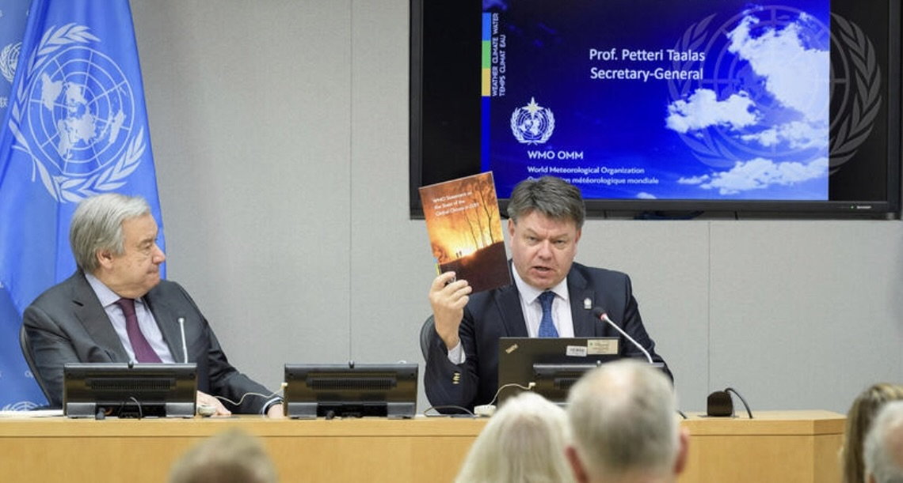

Reporting by Dan Jaime
JNL 221
Creator: MARTIN BERNETTI | Credit: AFP/Getty Images Copyright: 2010 AFP
According to data collected by the National Seismological Center of Chile, the South American country has experienced about a 20% increase in the amount of major earthquakes per year, within the last 5 years.
Climate change on our planet is an issue. A serious, high implications issue. While the alarming rise in global warming has been evidently clear in certain aspects of the world - melting ice caps, exponential rises in hurricanes and tornadoes, and dangerously high sea levels - it has also begun manifesting itself in places and in ways that history has never seen before.
Earthquakes. Seismic activity. Tectonic plate movement. Whatever you want to call it, most people will never experience it in their lives (lucky them). At the very base of it, ‘earthquakes’ as we know them, occur when the tectonic plates in the core of our planet release stored energy, creating a shift in those plates.
On the surface of the earth, we experience that tectonic ‘shift’ as earthquakes. Since seismic activity usually only occurs in certain regions of the world, gathering earthquake information can be tricky and misleading at times. One of the most active hotspots - if not the most - in the world remains the Pacific coasts of North and South America, especially the oft-forgotten country of Chile.
Chile has long been one of the most seismically active countries in the world. The long, narrow country on the Southeastern coast of South America experiences notable seismic movement close to 1,000 times a year on average, with Michigan Technological University defining ‘notable’ seismic activity as anything with a magnitude over 2.5.
While most people are geographically not likely to experience seismic movement, a recent study at the University of Miami suggested that the deterioration of our ice caps and other alarming climate change matters are more likely to be catalysts for seismic activity.
The National Seismological Center of Chile records all seismic activity in the country - no matter how small - through a network of small, highly technologically advanced systems. The three main systems in this network are: Broadband Seismometers, Strong Motion Accelerometers, and Global Positioning System (GPS).
The network allows seismologists - Chilean and all others - to analyze in-depth data about one of the most earthquake prone countries in the world, making it a zone of interest for researchers studying tectonic movement. It allows users to highlight earthquake hot zones, which in turn can lead to better infrastructure development in those areas, especially in a country like Chile where most infrastructure is not equipped to withstand major earthquakes.
Thus, analyzing earthquake data in one of the most earthquake-prone nations in the world would contribute to the ongoing discourse of global warming and the tragic effects of climate change and natural disasters.
The data collected by the National Seismological Center of Chile shows that the average number of earthquakes in the first five years of data collection, from 2014-2018, was about 352, while the average number of earthquakes in the final five years of data collection, from 2019-2023, was nearly 400. A difference of fifty major earthquakes per year is quite significant, and the alarming rise of global warming especially within the past half-decade could prove a correlation between the deterioration of our climate and a rise in the amount of seismic activity we experience.
According to the World Meteorologist Organization (WMO), the rate and impact of climate change within the past fifteen years has reached unforeseen levels. Each decade since the 1990s has been warmer than the last, and that trend is headed in the same direction for these 2020s. In a frankly sobering press conference by WMO Secretary-General Prof. Petteri Taalas last December, a few record-breaking milestones that were reached by our planet were announced.
“[In 2023], Greenhouse gas levels were record high. Global temperatures were record high. Sea level rise is record high. [And] Antarctic sea ice is record low,” said a somber Taalas.
The silence in the room was deafening.
Experts in other fields of study have also begun to see how the rapid deterioration of our climate has affected their careers and studies.
Dr. Joshua Russell, an Assistant Professor of Seismology at Syracuse, went further in depth as to how this deterioration might offer possible causes for the recent heightened levels of seismic activity during an interview with JNL221.
“Having more water in the oceans basically pushes down on the crust,” said Russell, referring to high sea levels due to climate change.
“It’s heavier on the crust than the majority of the planet, [which creates] small changes in the stress in the crust.”
But the oceanic crust is only the tip of this melting iceberg.
“It’s all about plate boundaries,” stressed Dr. Russell. Simply put, plate boundaries are the areas where two tectonic plates meet, and often the site of tectonic movement and volcanic activity. Situated along the Nazca-South American plate boundary, Chile’s situation is a unique one. Currently, the Nazca plate is being subducted beneath the South American plate, which creates immense stress along the boundary of the plate. What makes this subduction different though, is that both the Nazca plate and South American plate are both tens of millions of years old, meaning that they have been collecting energy since that time. This is what makes seismic activity so much more powerful, and frequent in this area.
To contrast, the Pacific Northwest of the United States is also on a plate boundary between the Juan de Fuca plate and North American plate. While seismically active, this region of the world experiences significantly less notable earthquakes.
“The difference is that it’s a much younger plate,” explained Dr. Russell. While the Juan de Fuca plate is still being subducted, its young age doesn’t allow for the boundary to “produce strong earthquakes, and the frequency of its seismic activity is also affected.”
Ultimately, we see how the the rapid rise in global warming leads to higher sea levels, which in turn pushes down on and stresses the oceanic crust, altering the subduction of certain plates. This is a great example of how seismic activity can be induced by issues arising from climate change.
Interestingly enough, the data collected by the National Seismological Center of Chile shows two specific outliers in the amount of earthquakes per month; April and September.
During these ten years of data collection, both April and September experienced almost one hundred more earthquakes than any other month, accounting for more than 23% of the total earthquake count!
At first glance, this data sticks out like a sore thumb. In the southern hemisphere, April is when summer begins turning into autumn, and September is when winter turns into spring, which begs the question, is this literal change of climate having an effect on the frequency of seismic activity?
In an article published by the World Economic Forum last year, researchers found that in the Himalayan region, the frequency of seismic activity is highly influenced by the rainfall cycle of their monsoon season. Their study revealed that 48% of regional earthquakes struck during the pre-monsoon months, while only 16% occurred during monsoon season.
During this study, researchers found that the sheer volume of the rain helped stabilize the region's crust, hence why there were such few earthquakes during monsoon season. This proved an earlier 2021 study in Science Advances done by a team of American, Taiwanese, and Canadian researchers, where they came to the same realization; lower groundwater levels corresponded to high seismic activity, and vice versa.
This reasoning offers another possible explanation for the high volume of seismic activity in Chile; due to Chile’s long-lasting droughts and lack of rain or snowfall, there is hardly any stability on its crust, allowing it to be very susceptible to earthquakes.
While earthquake information has been around for thousands of years, we are only recently beginning to accumulate real, tangible data about the undeniable dangers of global warming, making correlations between seismic activity and climate change difficult to interpret.
Tectonic plates will continue to shift. Plate boundaries will continue to rub up against one another. Nothing going on in the core of our earth is in our control. But the rate, and sheer volume of global warming is something that is fully in our hands. While we continue to gather information about our declining climate and unstable tectonic plates, it is vital to remember that the literal and metaphorical stability of our planet depends on us.